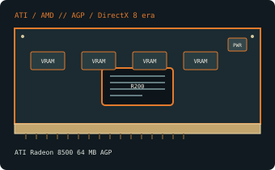

[ AGP-ERA GRAPHICS CARDS // IDENTIFIED COMPONENT ]
ATI Radeon 8500 64 MB AGP
R200, 2001. This record identifies the listed retail model/configuration; board-partner variations are called out separately.

MODEL / VARIANT: Retail 64 MB Radeon 8500, not the 8500 LE (lower-clocked) or 128 MB Radeon 8500.
Recorded specifications
| Cataloged product | ATI Radeon 8500 64 MB AGP |
|---|---|
| GPU / architecture / launch | R200; 2001. |
| Core & memory | R200 GPU; four pixel pipelines with two texture units each and two vertex shader engines; 64 MB DDR on a 128-bit interface; 275 MHz core and 275 MHz DDR clock (550 MT/s effective). |
| Host interface & power | AGP 4x (backward-compatible AGP modes depend on the host); typical retail outputs include VGA, DVI-I and S-Video. Bus-powered from the AGP slot, without an auxiliary board power connector; ATI did not publish a board-power rating for this model. Board revisions and OEM implementations vary. |
| Typical reference outputs | Retail reference layouts commonly provide VGA, DVI-I and S-Video; confirm the specimen and any DVI adapter. |
| Board dimensions | ATI Radeon 8500 reference-board length is approximately 175 mm; OEM and partner board layouts vary. Verify the exact board drawing and bracket clearance before installation. |
| Variant boundary | Retail 64 MB Radeon 8500, not the 8500 LE (lower-clocked) or 128 MB Radeon 8500. |
Compatibility, service & archival notes
The card predates PCI Express and requires an AGP host with suitable signaling/keying. Verify the exact AGP voltage supported by the motherboard; do not infer 3.3 V compatibility from an AGP-shaped slot. Use a legacy driver branch that supports the device ID and target operating system. Check VGA/DVI signaling and analog TV-out cable requirements.
- Check the exact slot keying/signaling, board dimensions, auxiliary-power pinout, PSU guidance, airflow and display outputs for the specimen; connector appearance alone does not establish compatibility.
- Install a driver supporting the recorded device ID and target OS. Preserve the original driver and firmware versions before making changes.
- Record board partner, PCB and cooler revision, device/subsystem IDs, BIOS, adapter set and physical condition. Do not power a card with damage, corrosion, obstructed cooling or suspected shorts.
Manufacturer, model & standards sources
- ATI Radeon 8500 64 MB AGP specifications — TechPowerUp GPU DatabaseIndependent model-level GPU, memory and interface reference; board revisions may vary.
- AMD legacy graphics drivers and support archiveManufacturer driver-support reference; select the product family, device ID and operating system that match the card.
- Accelerated Graphics Port (AGP) compatibility referenceAGP interface and host signaling reference; verify motherboard-specific voltage support.
- AMD product support and driver selectionAMD manufacturer support reference for identifying a compatible driver branch and operating system; availability depends on product age.
GPU-family references do not supersede the card manufacturer’s manual, nameplate or board revision for a specific specimen.